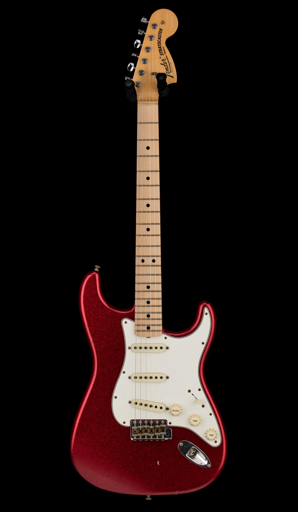

The Story of Fender
Fender is one of the most iconic names in music history. From the early days of Leo Fender’s workshop in California to the global stages of rock, blues, and jazz, Fender instruments have shaped the sound of generations.
This site explores Fender’s origins, the legendary guitars, and the artists who brought them to life.
Classic Fender Stratocaster
The Telecaster

Precision Bass